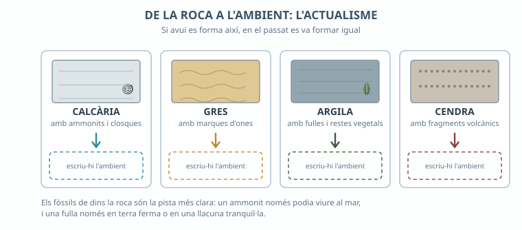
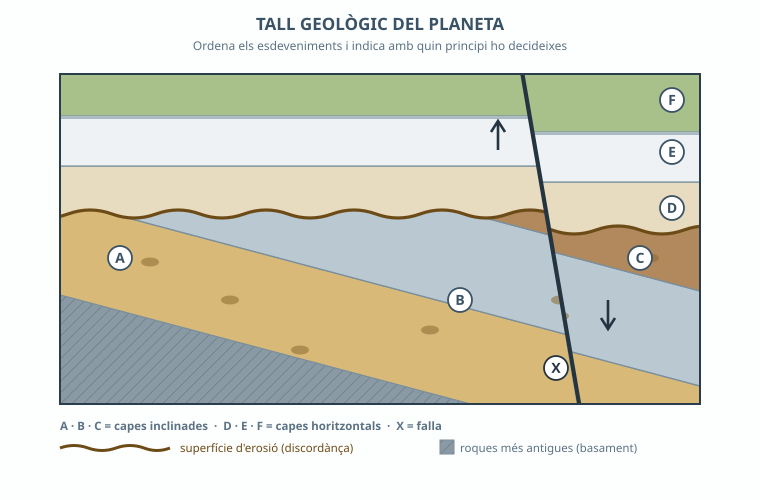
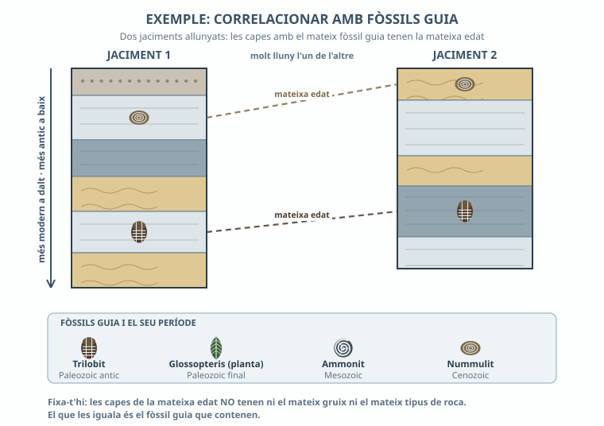
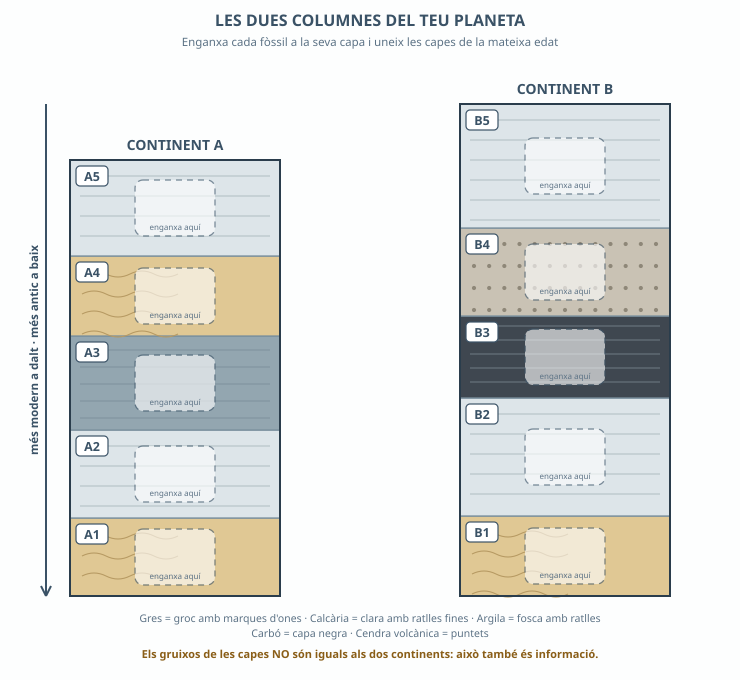

A la foto del tall de roques que has buscat, quina capa has dit que és la més antiga i amb quin argument?
Totes les capes eren horitzontals? Hi havia alguna esquerda que en tallés unes altres?

Fig.1 · Quatre roques amb les seves pistes. L'ambient l'has d'escriure tu a la casella de puntets.
1a. Completa la taula. Escriu l'ambient també a la Fig.1:
| Què trobes a la roca | En quin ambient es va formar | Com ho saps (què passa avui en un lloc així) |
|---|---|---|
| Calcària amb closques i ammonits | ||
| Gres amb marques d'ones | ||
| Argila fosca amb fulles | ||
| Capa de cendra |
1b. Per què els geòlegs poden dir què va passar fa milions d'anys si ningú no hi era? Explica-ho amb la paraula actualisme.

Fig.2 · El tall geològic del teu planeta. A, B i C són capes inclinades; D, E i F, horitzontals; X és una falla.
2a. Ordena els esdeveniments del més antic al més modern i digues amb quin principi ho decideixes:
Compta com un sol pas la deposició de capes seguides que no tenen res entremig (A+B+C, o D+E+F). No cal que hi incloguis el basament.
| Ordre | Què va passar | Principi que ho justifica |
|---|---|---|
| 1 | ||
| 2 | ||
| 3 | ||
| 4 | ||
| 5 |
2b. La falla X, és més antiga o més jove que la capa F? Com ho saps? (fixa't si la capa F queda tallada i desplaçada)
2c. Què hi ha entre les capes inclinades i les horitzontals? Què hi va passar, en aquell temps? (pista: mira la línia marró ondulada)

Fig.3 · Exemple resolt amb altres jaciments. Fixa-t'hi: les capes de la mateixa edat no tenen ni el mateix gruix ni el mateix tipus de roca.
3a. Al full de retallables hi ha sis fitxes de fòssils, cadascuna amb una nota de camp que descriu la roca on es va trobar. Dedueix a quina capa correspon, retalla-la i enganxa-la. Després uneix amb una línia les capes de la mateixa edat.

Enganxa aquí els fòssils i traça les línies de correlació.
3b. Escriu les parelles de capes que tenen la mateixa edat (format: A_ – B_).
3c. El Glossopteris era una planta terrestre i les seves llavors no travessaven oceans. Si el trobem als dos continents, què en podem deduir sobre on eren aquells continents en aquella època?
3d. Per què un fòssil d'una espècie que va viure 300 milions d'anys seguits no serveix com a fòssil guia?
4a. Com pot ser que hi hagi fòssils de mar a 1.441 m d'altitud? Explica-ho en dos passos: (1) com i on es va formar la roca, i (2) com va arribar allà dalt.
4b. El delta de l'Ebre, s'està formant ara o es va formar fa milions d'anys? Què ho demostra?
4c. Amb l'ajuda de la bastida, relaciona els elements del paisatge dels Ports:
| Element del paisatge | Com hi influeix la roca que hi ha a sota |
|---|---|
| El relleu | |
| L'aigua | |
| La vegetació |